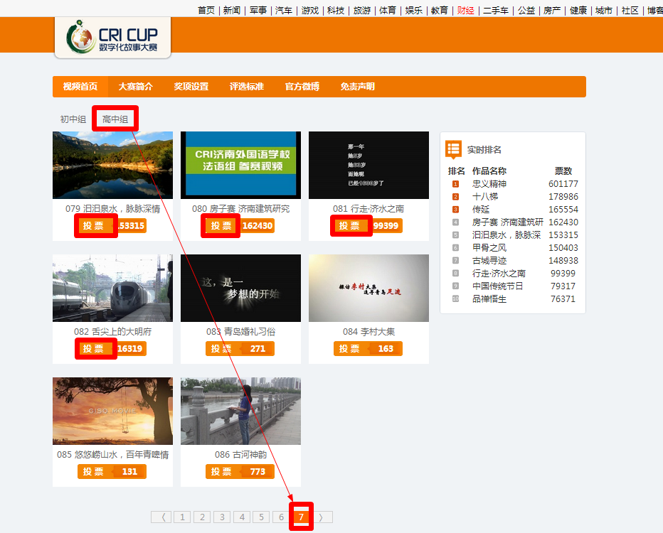

通 知
各班同学：
为进一步推进中华文化“走出去”工作，培养基于中国立场沟通中外文化的外宣人才，经国家汉办授权，国际台成立广播孔子学院，特举办“CRI杯全球中学生多语种数字化故事大赛”，大赛的宗旨是“向世界讲述中国故事、向中国展示世界文化”，鼓励世界各个国家与地区的中学生，以青年人的独特视角，深度挖掘所在国家、地区与城市的文化精髓，通过多语种多媒体形态，与其它国家与地区的同龄人交流分享。
我校小语种同学在老师们的组织下，从本学期初就认真准备，历时大半学期精心制作了五个参赛项目，参加了“CRI杯全球中学生多语种数字化故事大赛”，现进入决赛阶段。按照规则，决赛中网络投票环节满分40分，专家评选满分60分。希望全体同学积极投票支持我校参赛同学！
1.投票评选时间：7月1日-7月20日
2.网络投票准则：
（1）每天每IP或用户最多投10票;我校学生作品的编号是78-82号（79号作品网络投票已进前10）
（2）网络投票结束之后，按照各投票通道的投票总数进行排名。投票总数最高的作品获得网络投票部分的满分40分，投票总数第二高的作品获得投票环节的39.5分，依次类推。
3.网络投票地址：
请各班班委积极宣传，认真组织同学投票，也可以向自己熟悉的群落或朋友圈子介绍，为我校的优秀作品争得应有的荣誉！
大展身手，彰显济外力量！
济南外国语学校团委
2014年7月1日
1.中华网
通过http://www.china.com/进入中华网，点击“教育”进入中华网教育页面(http://edu.china.com/)，点击页面右侧“编辑推荐”中CRI杯赛图片。
或直接输入网址: http://edu.china.com/cricup
2.2.国际在线
通过http://gb.cri.cn/进入国际在线首页，在首页第三屏位置，点击通栏中CRI杯赛图片。
或直接输入网址:http://csl.cri.cn/cricup.html】
投票方式：
